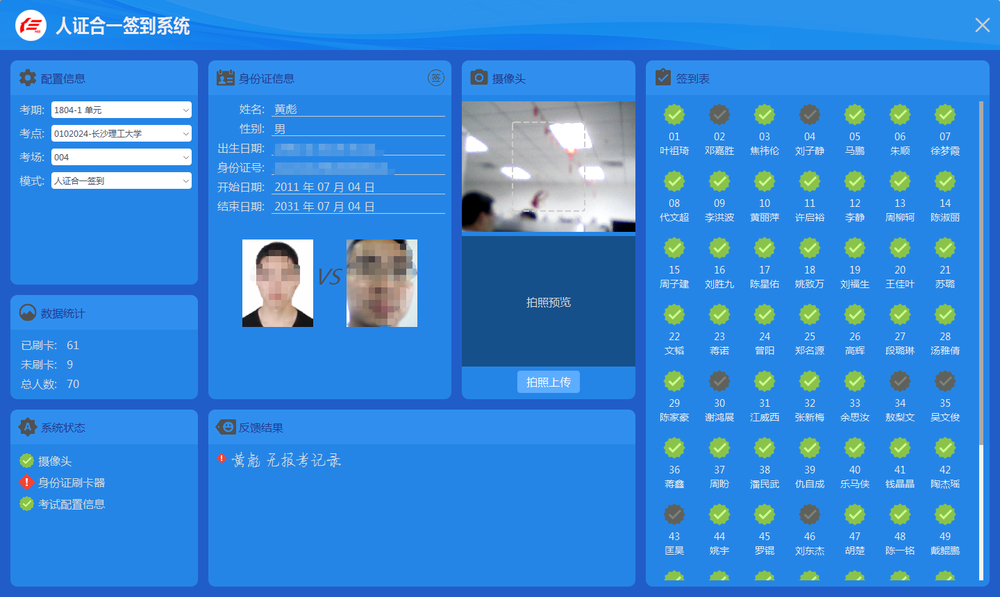
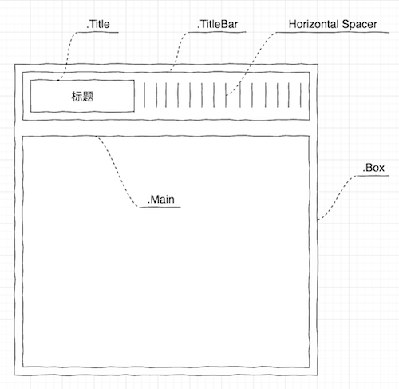
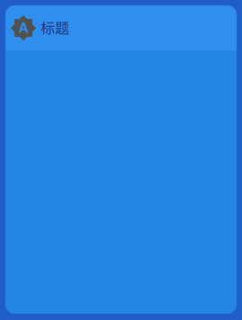
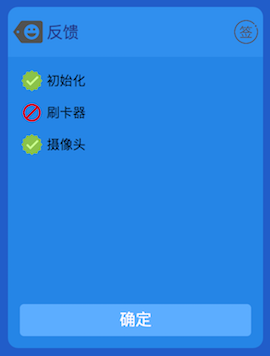

在进行界面布局的时候，常把控件根据功能分组放在一起，最常用的就是使用 QGroupBox 来放置一组控件。QGroupBox 虽然使用起来很方便，但就是有点丑，在要求较高的设计中，还得使用控件组合加自定义绘图或者 QSS 等才能实现，例如下面这个软件界面，直接使用 Qt 提供的控件是满足不了的:

上图中分组的布局没有使用 QGroupBox，而是用几个控件组合起来实现的，设计如下:

整个分组布局的控件是一个 QWidget，设置属性 class 为 Box (设置 class 属性是为了在 QSS 中使用类选择器)，它的顶部是标题栏，中间是主要控件放置的地方:
- 标题栏是一个 QWidget，设置属性 class 为 TitleBar，它里面有一个 QLabel 和一个 QSpacerItem (Horizontal Spacer)，使用 QHBoxLayout 布局:
- 标题栏中使用一个 QLabel 显示标题和图标，它的 class 属性为 Title
- 标题栏这么设计是为了可以在上面放其他控件
- 中间是放置功能控件的地方也是一个 QWidget，设置属性 class 为 Main，并且设置垂直拉伸的 size policy 为 expanding
实现如下图所示的效果，是分组布局的核心:

在 Qt Designer 中按照上面的设计布局好控件，并设置 Box, TitleBar 布局的 contentsMargins 和 spacing 为 0，再运用下面的 QSS 后就可以了 (是不是好简单!):
1 | .Box { |
可能有点难以理解的是标题上图标的显示，如果专门用一个 QLabel 来显示这个图标的话就没啥好说的，很简单，仔细观察就会发现我们使用了同一个 QLabel 既显示标题的文本，同时还显示了图标，没有使用单独的 QLabel 来显示图标。
具体的实现为:
准备图标 brightness.png，大小为 128x128 的 (其他尺寸也可以)
设置标题的高度为 30px
设置标题的左边框宽度为 30px，其它边框的宽度为 0，这样左边框的高度也为 30px 了，是一个正方形
把图标全部显示到标题的左边框里:
border-image: url(:/image/brightness.png) 0 0 0 128要理解为什么这样用，需要先深入理解 QSS 的 border-image，可参考 https://qtdebug.com/qtbook-qss-border-image
接下来就具体的运用一下分组的 Box 实现下面的效果:

在 Qt Designer 中复制粘贴一份上面的 Box (每增加一个分组就复制粘贴一次，如果每次都手动创建一次，不光是费工夫，还容易出错)
个性化标题的图标
不能所有标题上的图标都一样吧，所以在 Qt Designer 中给每个标题的 QLabel 都起一个有意义的名字，例如上面的叫 feedbackTitleLabel，然后设置它的图标:
1
2
3.Box .TitleBar .Title#feedbackTitleLabel {
border-image: url(:/image/tag-faces.png) 0 0 0 128;
}标题栏右边放了一个按钮 (这下明白为什么标题栏也要用布局了吧):
1
2
3
4
5
6
7
8
9.Box .TitleBar #signButton {
width: 24px;
height: 24px;
margin-right: 5px;
border: none;
border-width: 0;
border-image: url(:/image/signin.png) 0 0 0 0;
qproperty-flat: true; /* 设置按钮的 flat 为 true 非常重要，否则 QSS 的效果就不会非常完美 */
}在 Main 的 Widget 中放上几个 QLabel 和 QPushButton，QLabel 左边的图标还是使用 border-image 来实现的:
1
2
3
4
5
6
7
8
9
10
11
12
13
14
15
16
17
18
19
20
21
22
23
24
25
26
27
28
29
30
31
32
33.Box .Main .OkLabel {
min-height: 24px;
max-height: 24px;
border-width: 0 0 0 24;
border-image: url(:/image/ok.png) 0 0 0 128;
}
.Box .Main .ErrorLabel {
min-height: 24px;
max-height: 24px;
border-width: 0 0 0 24;
border-image: url(:/image/error.png) 0 0 0 128;
}
.Box .Main QPushButton {
color: white;
background: #5cadff;
border: none;
border-radius: 4px;
padding: 0px 10px 2px 10px;
min-height: 30px;
max-height: 30px;
font-size: 16px;
qproperty-flat: true;
}
.Box .Main QPushButton:hover {
color: #DDD;
}
.Box .Main QPushButton:pressed {
color: #333;
}
如果 Main 中那个按钮的最大最小宽度设置为 100px，则发现它会靠左显示，怎么让其居中呢？这就需要调用 layout 的 setAlignment() 函数设置对齐方式了:
1 | ui->pushButton->parentWidget()->layout()->setAlignment(ui->pushButton, Qt::AlignCenter); |
本文介绍了分组布局的设计、实现和运用，以及利用 border-image 在 QLabel 中同时显示文本和图标，相信对于大家来说应用没有啥难度了，最后附上项目的代码 GroupBox.7z。